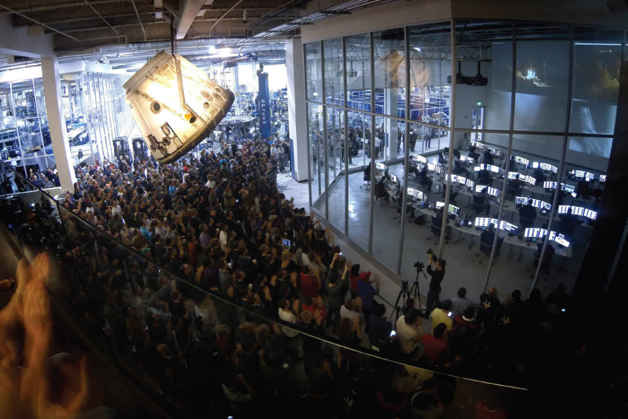

PHOTOGRAPHIC INSERT
The Haldeman children had lots of downtime in the African bush while on wild adventures with their parents.
马斯克的外祖父霍尔德曼天生爱冒险，除了常自己开飞机到各地旅行，还经常带着孩子们到荒野去探险，照片中的宁静，让人对这些旅行的危险性产生错觉。
As a toddler, Musk would often drift off into his own world and ignore those around him. Doctors theorized that he might be hard of hearing and had his adenoid glands removed.
小马斯克有独特的思考模式，常陷入自己的沉思中，对周遭发生的一切没反应，医生以为他听力有问题，还因此切掉了他的扁桃体。
Musk was a loner throughout grade school and suffered for years at the hands of bullies.
念小学时，马斯克是个独行侠，对世界很好奇，对事实很执着，同学不喜欢他，也曾遭同学霸凌。
Musk's original video-game code for Blastar, the game he wrote as a twelve-year-old and published in a local magazine.
12岁时，马斯克的名字第一次登上媒体，他编写的电子游戏源代码刊登在南非当地的一本杂志上。梅耶·马斯克
(From left to right:) Elon, Kimbal, and Tosca at their house in South Africa. All three children now live in the United States.
马斯克与弟弟金巴尔(中)和妹妹托斯卡(右)在南非的家中，三兄妹感情很好，目前皆定居美国。
Musk ran away on his own to Canada and ended up at Queen's University in Ontario, living in a dormitory for foreign students.
17岁那年，马斯克勇闯天涯跑到加拿大，当了一年背包客之后，就读于皇后大学，住在学生宿舍。
J. B. Straubel puts together one of Tesla Motors' early battery packs at his house.
特斯拉首席技术长官斯特劳贝尔年轻时在家中组装特斯拉电动车早期的电池组。

A handful of engineers built the first Tesla Roadster in a Silicon Valley warehouse that they had turned into a garage workshop and research lab.
几名工程师在硅谷一栋两层楼的建筑里打造出第一辆Roadster原型车。
Musk and Martin Eberhard prepare to take the early Roadster for a test-drive. The relationship between the two men would fall apart in the years to come.
马斯克和特斯拉共同创始人艾伯哈德试驾早期的Roadster。两人关系后来破裂，直到特斯拉公司上市，两人才冰释前嫌。
SpaceX built its rocket factory from the ground up in a Los Angeles warehouse to give birth to the Falcon 1 rocket.
SpaceX在洛杉矶郊区建立了一座真正的火箭工厂，成功打造出“猎鹰1号”火箭。
Tom Mueller (far right, gray shirt) led the design, testing, and construction of SpaceX's engines.
米勒(最右边)主导了SpaceX火箭引擎的设计、测试和建造。
SpaceX had to conduct its first flights from Kwajalein Atoll (or Kwaj) in the Marshall Islands. The island experience was a difficult but ultimately fruitful adventure for the engineers.
SpaceX最初几次发射是在马绍尔群岛的夸贾林环礁进行的，对这些工程师来说，在这座岛屿上的一切经验都是一场冒险，过程虽艰苦，成果却很丰硕。
SpaceX built a mobile mission-control trailer, and Musk and Mueller used it to monitor the later launches from Kwaj.
SpaceX的行动任务控制中心，马斯克和米勒在此全程监控火箭的发射过程。
Musk hired Franz von Holzhausen in 2008 to design the Tesla Model S. The two men speak almost every day, as can be seen in this meeting in Musk's SpaceX cubicle.
2008年，冯·霍兹豪森加入特斯拉，投入Model S的设计工作，马斯克几乎每天都会跟他在一起讨论，两人有聊不完的新点子。
SpaceX's ambitions grew over the years to include the construction of the Dragon capsule, which could take people to the International Space Station and beyond.
过去的几年里，SpaceX的野心逐渐膨胀，包括建造“龙”飞船，可以载人去国际空间站或外太空。
Musk has long had a thing for robots and is always evaluating new machines for both the SpaceX and Tesla factories.
马斯克对机器人一直存有戒心，总是再三评估SpaceX和特斯拉工厂里的新机器。
When SpaceX moved to a new factory in Hawthorne, California, it was able to scale out its assembly line and work on multiple rockets and capsules at the same time.
SpaceX搬到加州霍桑市的新工厂，使装配线得以扩大规模，并同时进行多组火箭和太空船的组装工作。
SpaceX tests new engines and crafts at a site in McGregor, Texas. Here the company is testing a reusable rocket, code-named “Grasshopper,” that can land itself.
SpaceX在得州麦格雷戈测试新的火箭引擎和飞行器，他们正在测试代号为“蚱蜢”(Grasshopper)的可重复使用火箭。
Musk has a tradition of visiting Dairy Queen ahead of test flights in Texas, in this case with SpaceX investor and board member Steve Jurvetson (left) and fellow investor Randy Glein (right).
在得州进行火箭试射之前，马斯克经常光顾冰雪皇后冰激凌店，此次同行的有SpaceX投资人、董事乔·维特森(左)和投资人兰迪·格雷恩(右)。

With a Dragon capsule hanging overhead, SpaceX employees peer into the company's mission control center at the Hawthorne factory.
霍桑工厂里，“龙”飞船悬在天花板上，SpaceX员工正紧盯着任务控制中心。
Gwynne Shotwell is Musk's right-hand woman at SpaceX and oversees the day-to-day operations of the company, including monitoring a launch from mission control.
SpaceX总裁肖特维尔是马斯克的得力助手，协助管理SpaceX的日常运作，包括监督任务控制中心的发射行动。
Tesla took over the New United Motor Manufacturing Inc. (or NUMMI) car factory in Fremont, California, which is where workers produce the Model S sedan.
特斯拉买下新联合汽车制造公司(NUMMI)位于加州弗里蒙特的汽车工厂，在这里生产Model S轿车。
Tesla began shipping the Model S sedan in 2012. The car ended up winning most of the automotive industry's major awards.
特斯拉Model S于2012年开始交车，这辆车赢得了多项汽车大奖。
The Tesla Model S sedan with its electric motor (near the rear) and battery pack (bottom) exposed.
特斯拉Model S车身、电动机(靠近后端)和电池组(底部)。
Tesla's next car will be the Model X SUV with its signature “falcon-wing doors.”
继Model S之后，特斯拉要推出Model X运动型多功能车，这部车拥有独特的鹰翼门。

In 2013, Musk visited Cuba with Sean Penn (driving) and the investor Shervin Pishevar (back seat next to Musk). They met with students and members of the Castro family, and tried to free an American prisoner.
2013年，马斯克和影星西恩·潘(Sean Peen，驾驶者)及投资人皮谢瓦(Shervin Pishevar，后排坐在马斯克旁边)访问古巴。他们与学生及卡斯特罗家族成员见面，并试图营救一名美国战俘。
Musk unveiled the Hyperloop in 2013. He proposed it as a new mode of transportation, and multiple groups have now set to work on building it.
马斯克于2013年公布超级高铁构想，提议以此作为新的大众运输方式，现已有多组团队准备进行兴建测试轨道，进一步落实马斯克的构想。
In 2014, Musk unveiled a radical new take on the space capsule—the Dragon V2. It comes with a drop-down touch-screen display and slick interior.
2014年，马斯克公布一款新型太空船(龙2号)，它配备了下拉式的触控屏幕显示器及完美的内部装潢。
The Dragon V2 will be able to return to Earth and land with pinpoint accuracy.
第二代“龙”飞船能够返回地球，并非常精准地着陆。
Musk is a nonstop traveler. Here's a look at one year in his life via records obtained through a Freedom of Information Act request.
马斯克是马不停蹄的旅人，通过图中这些信息，可以了解他一整年的生活。本图是根据《信息自由法案》（FOIA）提请要求取得的。
Musk married, divorced, remarried, and then divorced the actress Talulah Riley.
马斯克与演员莱莉结过两次婚，第二次仍以离婚收场。
Musk and Riley relax at home in Los Angeles. Musk shares the home with his five young boys.
马斯克和莱莉在洛杉矶的家中小憩，这里也是马斯克与5个儿子的家。